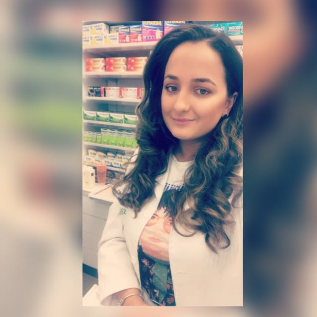

Curriculum Vitae |
Informații personale Educație și formare personală Experiență profesională Competențe lingvistice Competențe digitale Voluntariat Permis de conducere
|
Popa Maria Iulia Informatii personale |
|  |
Sex: Feminin Data de naștere: 07 Februarie 1994 Naționalitate: Romana
|
|
|
| 2020-prezent | Studii universitare: |
| 2018 - 2019 | Studii universitare de master: |
| 2013 - 2018 | Studii universitare: |
| 2008 - 2013 | Studii liceale: |
| 2005 - 2009 | Studii gimnaziale: |
|
|
| 01/11/2018 - 07/01/2022 | Internship la Continental Companie:SC. Continental SRL Adresă:Strada Salzburg 8, Sibiu (România) Principalele activități și responsabilități: - Mentenanță software echipamente producție; - Testare cod; - Implementare software pentru linile noi de producție. |
| 01/11/2018 - 07/01/2022 | Farmacist Companie: SC. SENSIBLU SRL Adresă: Strada Bihorului,Sibiu (România) Principalele activități și responsabilități: - Consiliere pacienți și eliberare medicamente și produse non-pharma pentru a răspunde nevoilor acestora; - Supravegherea și coordonarea activității asistenților și cosmeticienilor de pe tură pentru a răspunde optim nevoilor pacienților și a menține standardele profesionale agreate în companie; - Recepționarea, verificarea și asigurarea depozitării produselor farmaceutice pentru a menține stocurile de produse; - Participarea la implementarea și derularea campaniilor promoționale în scopul îndeplinirii obiectivelor comerciale ale companiei; - Monitorizarea și gestionarea stocurilor, sugestii de achiziție pentru a asigurarea unei aprovizionări optime; - Centralizarea și calcularea rețetelor pentru a fi trimise la Casa de Asigurări de Sănătate; - Asigurarea suportului profesional pentru personalul mediu din farmacie în scopul creșterii gradului de informare profesională și a calității actului farmaceutic; - Realizarea evidentei contabile primate pentru a oferi datele necesare departamentului financiar; - Participarea la realizarea inventarelor periodice pentru a asigura controlul gestiunii; - Înlocuirea Farmacistului Manager în lipsa acestuia pentru a asigura continuitatea operațională. |
|
|||||||||||
Limba(i) maternă(e): |
Română |
||||||||||
| Alte limbi străine cunoscute: | Limba Engleză
|
||||||||||
Limba Franceză
|
|
|
Microsoft Office |
Microsoft Office (Excel, PowerPoint, Word) - nivel avansat |
Informație si Comunicare |
Utilizare a programelor de comunicare (Mail, Google Meet, Zoom, Skype) |
Programare |
C / C# / C++ / Java |
Programare WEB |
HTML / CSS |
Voluntariat |
|
| 04/10/2019-05/10/2019 | TelVerde - CALL CENTER COVID-19 Responsabilități: - Informarea populației cu referire la regulile de izolare și carantinare; - Furnizarea datelor necesare obținerii deciziilor de carantinare și izolare; - Comunicarea permanentă cu restul voluntarilor și stabilirea informațiilor transmise spre populație; - Asimilarea informaților de actualitatea referitoare la regulile, legile di directivele furnizate de ministerul de interne și de parlamentul național și european |
Permis de conducere |
|
17/10/2023 |
Categoria: B |